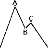
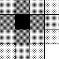
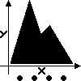

Charts¶

Basic Building Blocks¶Points¶
Examples:
Polygons¶
Examples:
GeoPandas Shapes¶
GeoPandas GeoDataFrame is supported by the following geometry layers: polygon, map, point, text, path, rect.
Learn more: GeoPandas Support.

Bivariate Distribution¶Heatmap of 2d bin counts,
2d density,
filled 2d density
Examples:

Presentation Options¶Options:
Theme layer,
title layer,
size layer,
label for X axis,
label for Y axis,
both labels,
legend guide,
continuous colour bar guide
Examples:


All Features You Are Interested In¶

ggplot2-like API
The Python API being very similar yet is different in detail from R; although we have not implemented the entire ggplot2 API, we have added a few new features

Customizable Tooltips
You can customize the content of tooltips for the layer by using the parameter tooltips of geom functions

Export to SVG and HTML
The ggsave() function is an easy way to export plot to a file in SVG or HTML formats

Formatting
Lets-Plot supports formatting of values of numeric and date-time types; complementary to the value formatting, a string template is also supported

Graphics Grid
GGBunch shows a collection of plots on one figure; each plot in the collection can have an arbitrary location and size

Sampling
Sampling is a special technique of data transformation, which helps to deal with large datasets and overplotting

‘No Javascript’ / Offline Mode
In the ‘no javascript’ mode Lets-Plot generates plots as bare-bones SVG images; plots in the notebook with option offline=True will be working without an Internet connection

Platforms
You can use Lets-Plot in Jupyter notebook or other notebook of your choice, like Datalore, Kaggle or Colab; moreover there is a plugin “Lets-Plot in SciView” for IntelliJ-based IDEs with the enabled scientific mode

Kotlin API
The Kotlin API also is available in Jupyter and Datalore; the library enables embedding plots into a JVM and a Kotlin/JS application

Interactive Maps
Interactive maps allow zooming and panning around geospatial data that can be added to the base-map layer using regular ggplot geoms

Combining Maps with Geometries
geom_livemap() has built-in markers used for displaying the data; besides you can append as many additional layers with various geometries as you need

Built-In and 3d-Party Tiles
Change themes and use external tile services to diversify your maps

Built-In Geocoding
The Lets-Plot has built-in geocoding capabilities covering the following administrative levels: countries, states (US and non-US equivalents), counties (and equivalents), cities (and towns)